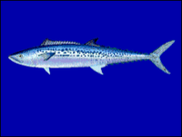

さわら（鰆）の漁獲量 都道府県ランキング
1位から3位までと、とれた量
さわらが日本でいちばん多くとれるのは京都府です。1,011 tで、全国（9,557 t）の11%を占めます。

| 順位 | 都道府県 | 漁獲量 | 全国に占める割合 |
|---|---|---|---|
| 1位 | 京都府 | 1,011 t | 11% |
| 2位 | 福井県 | 837 t | 8.8% |
| 3位 | 石川県 | 748 t | 7.8% |
この数字について
- 分類：鯖の仲間
- 全国の漁獲量：9,557 t
- この数字が表すもの：漁獲量（海でとった重さ。養殖は含みません）
- 調査：海面漁業生産統計調査（海面漁業） 令和6年
- 38県分を調査（調査していない県は順位に入りません）
さわらの漁獲量について、よくある質問
- さわらの漁獲量が日本一の都道府県はどこですか？
- 京都府です。海面漁業生産統計調査（海面漁業）（令和6年）で1,011 tでした。
- さわらの漁獲量ランキング2位・3位はどこですか？
- 2位は福井県（837 t）、3位は石川県（748 t）です。
- さわらの全国の漁獲量はどれくらいですか？
- 9,557 t（令和6年）です。